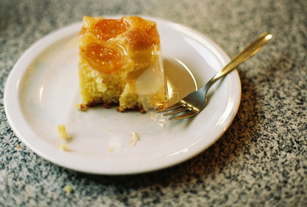
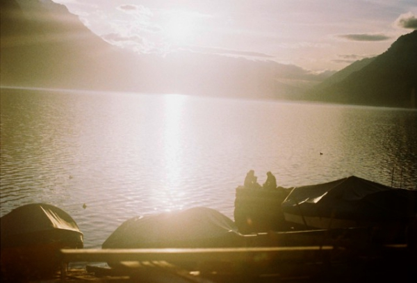
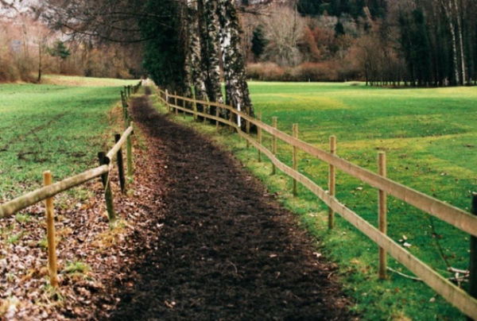
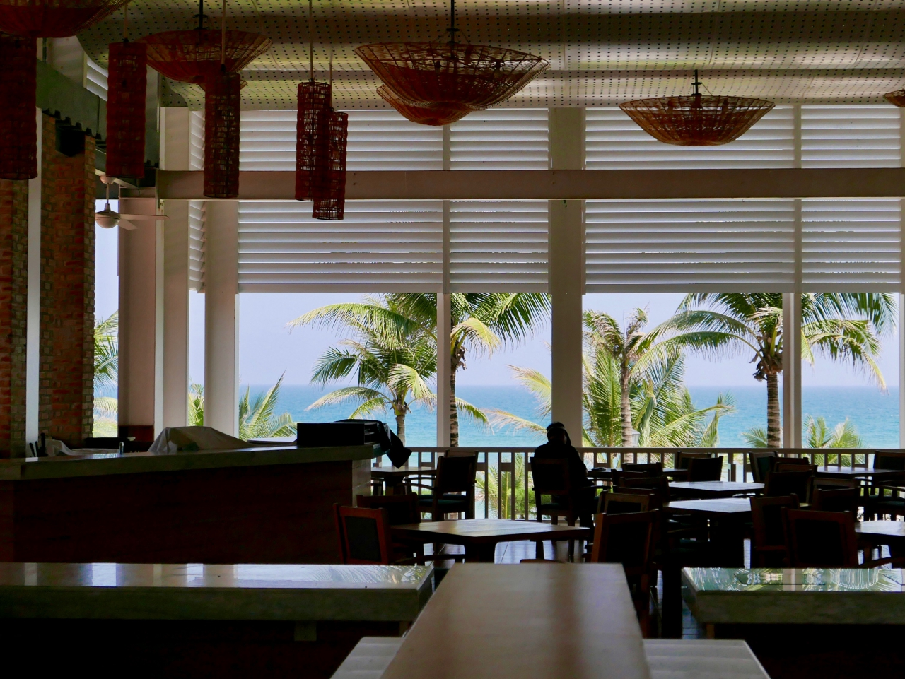
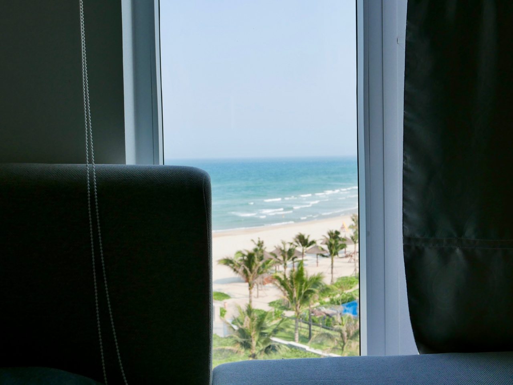
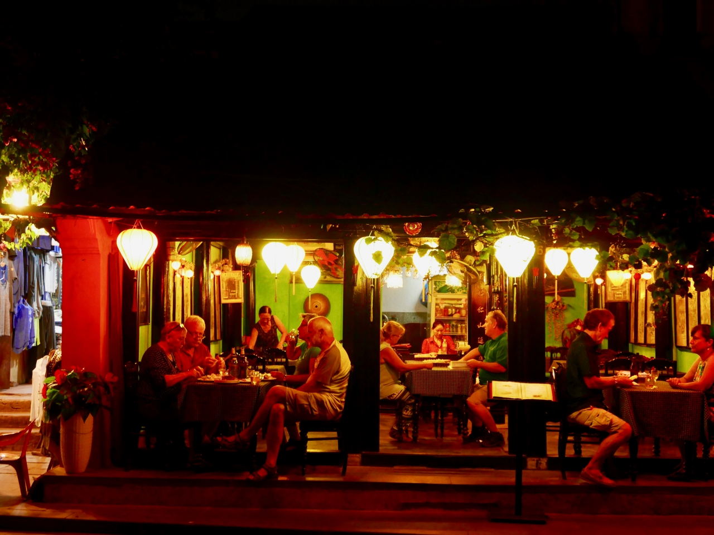

   Previous Next Austria and Switzerland 2008 / Nikon F2AS Photomic 35mm SLR Previous Next Sapporo, Japan 2017 / Leica D-Lux Type109    Previous Next Danang, Vietnam 2018 / Leica D-Lux Type109 photography © Sangpil Yun